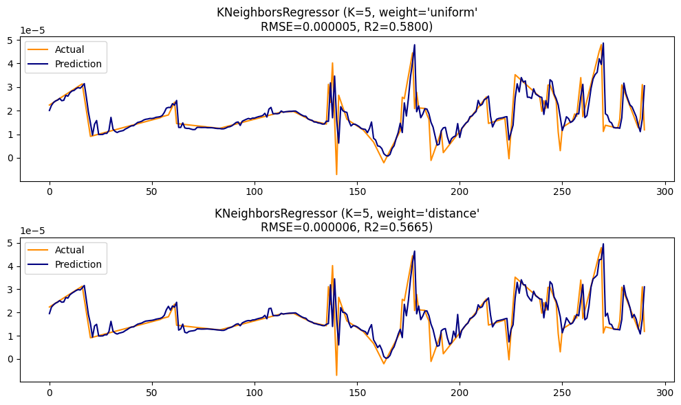

Time Series dataset for prediction#
Crawl data NO2 menggunakan openeo#
import openeo
import os
import xarray as xr
import pandas as pd
connection = openeo.connect("openeo.dataspace.copernicus.eu").authenticate_oidc()
coordinates = [
[113.68677516434411, -8.165890715645048],
[113.68767635393294, -8.178366137853942],
[113.7212614574645, -8.178954488616213],
[113.72266252355564, -8.167199225119404],
[113.68677516434411, -8.165890715645048]
]
# 3️⃣ Hitung bounding box otomatis dari koordinat
lons = [coord[0] for coord in coordinates]
lats = [coord[1] for coord in coordinates]
bbox = {
"west": min(lons),
"south": min(lats),
"east": max(lons),
"north": max(lats)
}
# 4️⃣ Tampilkan area yang tercakup
print("🗺️ Area coverage (Jember AOI):")
print(f"Longitude: {bbox['west']}°E to {bbox['east']}°E")
print(f"Latitude: {bbox['south']}°S to {bbox['north']}°S")
# 5️⃣ Buat AOI GeoJSON sederhana untuk dipakai di OpenEO
aoi = {
"type": "Polygon",
"coordinates": [coordinates]
}
print("\n✅ AOI untuk Jember sudah siap digunakan.")
---------------------------------------------------------------------------
ModuleNotFoundError Traceback (most recent call last)
Cell In[1], line 1
----> 1 import openeo
2 import os
3 import xarray as xr
ModuleNotFoundError: No module named 'openeo'
# Create a datacube with daily data
print("Loading data collection...")
cube = connection.load_collection(
"SENTINEL_5P_L2",
temporal_extent=["2021-09-20", "2025-09-25"],
spatial_extent=bbox,
bands=["NO2"]
)
# Add basic filtering to reduce data volume
cube = cube.filter_bands(["NO2"])
# Perform daily aggregation
print("Aggregating data to daily values...")
cube = cube.aggregate_temporal_period(
period="day", # Agregasi per hari
reducer="mean" # Menggunakan nilai rata-rata untuk setiap hari
)
print("Processing complete. Ready for download.")
Loading data collection...
Aggregating data to daily values...
Processing complete. Ready for download.
# Create results directory if it doesn't exist
os.makedirs("results", exist_ok=True)
# Download the data
try:
print("Downloading data...")
cube.download("results/no2_jember.nc")
print("Data successfully downloaded to results/no2_jember.nc")
except Exception as e:
print(f"Error downloading data: {e}")
# Try batch processing as alternative
try:
print("\nTrying batch processing...")
batch_job = cube.execute_batch(outputfile="results/no2_jember.nc")
while True:
status = batch_job.status()
print(f"Job status: {status}")
if status == 'finished':
print("Download completed successfully")
break
elif status == 'error':
raise Exception("Batch job failed")
except Exception as e2:
print(f"All download attempts failed.")
print(f"Error: {e2}")
raise
Downloading data...
Error downloading data: HTTPSConnectionPool(host='openeo.dataspace.copernicus.eu', port=443): Read timed out. (read timeout=1800)
Trying batch processing...
0:00:00 Job 'j-2510251135504fb68bc7f1b3a77f6453': send 'start'
0:00:14 Job 'j-2510251135504fb68bc7f1b3a77f6453': created (progress 0%)
0:00:19 Job 'j-2510251135504fb68bc7f1b3a77f6453': running (progress N/A)
0:00:26 Job 'j-2510251135504fb68bc7f1b3a77f6453': running (progress N/A)
0:00:34 Job 'j-2510251135504fb68bc7f1b3a77f6453': running (progress N/A)
0:00:44 Job 'j-2510251135504fb68bc7f1b3a77f6453': running (progress N/A)
0:00:57 Job 'j-2510251135504fb68bc7f1b3a77f6453': running (progress N/A)
0:01:13 Job 'j-2510251135504fb68bc7f1b3a77f6453': running (progress N/A)
0:01:32 Job 'j-2510251135504fb68bc7f1b3a77f6453': running (progress N/A)
0:01:57 Job 'j-2510251135504fb68bc7f1b3a77f6453': running (progress N/A)
0:02:27 Job 'j-2510251135504fb68bc7f1b3a77f6453': running (progress N/A)
0:03:05 Job 'j-2510251135504fb68bc7f1b3a77f6453': running (progress N/A)
0:03:52 Job 'j-2510251135504fb68bc7f1b3a77f6453': running (progress N/A)
0:04:51 Job 'j-2510251135504fb68bc7f1b3a77f6453': running (progress N/A)
0:05:51 Job 'j-2510251135504fb68bc7f1b3a77f6453': running (progress N/A)
0:06:52 Job 'j-2510251135504fb68bc7f1b3a77f6453': running (progress N/A)
0:07:52 Job 'j-2510251135504fb68bc7f1b3a77f6453': running (progress N/A)
0:08:53 Job 'j-2510251135504fb68bc7f1b3a77f6453': running (progress N/A)
0:09:53 Job 'j-2510251135504fb68bc7f1b3a77f6453': running (progress N/A)
0:10:54 Job 'j-2510251135504fb68bc7f1b3a77f6453': running (progress N/A)
0:11:54 Job 'j-2510251135504fb68bc7f1b3a77f6453': running (progress N/A)
0:12:55 Job 'j-2510251135504fb68bc7f1b3a77f6453': running (progress N/A)
0:13:55 Job 'j-2510251135504fb68bc7f1b3a77f6453': running (progress N/A)
0:14:56 Job 'j-2510251135504fb68bc7f1b3a77f6453': finished (progress 100%)
Job status: finished
Download completed successfully
Transform data dari NC ke CSV#
!pip install netCDF4
import netCDF4
import pandas as pd
import numpy as np
# 1. Baca file NetCDF
file_path = "C:\\Users\\mjavi\\Documents\\Pendidikan\\UTM\\matkul\\PSD\\Tugas 3\\results\\no2_jember.nc"
ds = netCDF4.Dataset(file_path)
# 2. Tampilkan struktur file
print(ds)
# 3. Ambil variabel yang tersedia
print(ds.variables.keys())
# 4. Ambil variabel waktu dan NO2
time_var = ds.variables["t"][:]
no2_var = ds.variables["NO2"][:]
# 5. Konversi waktu ke datetime
time_units = ds.variables["t"].units
dates = netCDF4.num2date(time_var, units=time_units)
# 6. Jika data NO2 berdimensi lebih dari 1 (misalnya [time, lat, lon]),
# kita rata-ratakan agar menjadi satu nilai per waktu
if no2_var.ndim > 1:
no2_mean = np.nanmean(no2_var, axis=tuple(range(1, no2_var.ndim)))
else:
no2_mean = no2_var
# 7. Buat DataFrame
df = pd.DataFrame({
"time": dates,
"NO2": no2_mean
})
# 8. Simpan ke CSV
df.to_csv("no2_jember.csv", index=False)
print("✅ File no2_jember.csv berhasil dibuat.")
print(df.head())
Requirement already satisfied: netCDF4 in c:\users\mjavi\appdata\local\programs\python\python310\lib\site-packages (1.7.3)
Requirement already satisfied: cftime in c:\users\mjavi\appdata\local\programs\python\python310\lib\site-packages (from netCDF4) (1.6.5)
Requirement already satisfied: certifi in c:\users\mjavi\appdata\local\programs\python\python310\lib\site-packages (from netCDF4) (2025.8.3)
Requirement already satisfied: numpy in c:\users\mjavi\appdata\local\programs\python\python310\lib\site-packages (from netCDF4) (1.26.4)
<class 'netCDF4.Dataset'>
root group (NETCDF4_CLASSIC data model, file format HDF5):
Conventions: CF-1.9
institution: Copernicus Data Space Ecosystem openEO API - 0.68.0a10.dev20250930+2976
description:
title:
dimensions(sizes): t(1458), y(1), x(1)
variables(dimensions): int32 t(t), float64 x(x), float64 y(y), |S1 crs(), float32 NO2(t, y, x)
groups:
dict_keys(['t', 'x', 'y', 'crs', 'NO2'])
✅ File no2_jember.csv berhasil dibuat.
time NO2
0 2021-09-20 00:00:00 NaN
1 2021-09-21 00:00:00 NaN
2 2021-09-22 00:00:00 NaN
3 2021-09-23 00:00:00 -0.000003
4 2021-09-24 00:00:00 NaN
WARNING: Ignoring invalid distribution -atplotlib (c:\users\mjavi\appdata\local\programs\python\python310\lib\site-packages)
WARNING: Ignoring invalid distribution -atplotlib (c:\users\mjavi\appdata\local\programs\python\python310\lib\site-packages)
WARNING: Ignoring invalid distribution -atplotlib (c:\users\mjavi\appdata\local\programs\python\python310\lib\site-packages)
Memprosessing data jika ada missing values dengan interpolasi#
import pandas as pd
df = pd.read_csv("no2_jember.csv")
df['time'] = pd.to_datetime(df['time'], errors='coerce')
df = df.set_index('time')
df['NO2'] = df['NO2'].interpolate(method='time')
print(df.isna().sum())
n_lags = 4
supervised = pd.DataFrame()
for i in range(n_lags, 0, -1):
supervised[f'NO2(t-{i})'] = df['NO2'].shift(i)
supervised['NO2(t)'] = df['NO2']
# drop NaN value
supervised = supervised.dropna()
print("📅 Head of Data:")
print(supervised.head())
print("")
print("📦 Data info:")
supervised.info
NO2 3
dtype: int64
📅 Head of Data:
NO2(t-4) NO2(t-3) NO2(t-2) NO2(t-1) NO2(t)
time
2021-09-27 -0.000003 0.000002 0.000008 0.000014 0.000014
2021-09-28 0.000002 0.000008 0.000014 0.000014 0.000013
2021-09-29 0.000008 0.000014 0.000014 0.000013 0.000013
2021-09-30 0.000014 0.000014 0.000013 0.000013 0.000013
2021-10-01 0.000014 0.000013 0.000013 0.000013 0.000012
📦 Data info:
<bound method DataFrame.info of NO2(t-4) NO2(t-3) NO2(t-2) NO2(t-1) NO2(t)
time
2021-09-27 -0.000003 0.000002 0.000008 0.000014 0.000014
2021-09-28 0.000002 0.000008 0.000014 0.000014 0.000013
2021-09-29 0.000008 0.000014 0.000014 0.000013 0.000013
2021-09-30 0.000014 0.000014 0.000013 0.000013 0.000013
2021-10-01 0.000014 0.000013 0.000013 0.000013 0.000012
... ... ... ... ... ...
2025-09-20 0.000024 0.000022 0.000020 0.000017 0.000015
2025-09-21 0.000022 0.000020 0.000017 0.000015 0.000013
2025-09-22 0.000020 0.000017 0.000015 0.000013 0.000017
2025-09-23 0.000017 0.000015 0.000013 0.000017 0.000031
2025-09-24 0.000015 0.000013 0.000017 0.000031 0.000012
[1451 rows x 5 columns]>
Normalisasi data min-max#
from sklearn.preprocessing import MinMaxScaler
# Pisahkan fitur dan target
X = supervised[['NO2(t-4)', 'NO2(t-3)', 'NO2(t-2)', 'NO2(t-1)']]
y = supervised['NO2(t)']
# Normalisasi Min-Max
scaler = MinMaxScaler(feature_range=(0, 1))
X_scaled = scaler.fit_transform(X)
# Ubah index time jadi kolom lagi
supervised = supervised.reset_index()
# Konversi kembali ke Dataframe
normalized_df = pd.DataFrame(X_scaled, columns=X.columns)
print("Sebelum normalisasi:\n", X.head())
print("\nSesudah normalisasi:\n", normalized_df.head())
Sebelum normalisasi:
NO2(t-4) NO2(t-3) NO2(t-2) NO2(t-1)
time
2021-09-27 -0.000003 0.000002 0.000008 0.000014
2021-09-28 0.000002 0.000008 0.000014 0.000014
2021-09-29 0.000008 0.000014 0.000014 0.000013
2021-09-30 0.000014 0.000014 0.000013 0.000013
2021-10-01 0.000014 0.000013 0.000013 0.000013
Sesudah normalisasi:
NO2(t-4) NO2(t-3) NO2(t-2) NO2(t-1)
0 0.096852 0.177395 0.257937 0.338480
1 0.177395 0.257937 0.338480 0.333293
2 0.257937 0.338480 0.333293 0.328107
3 0.338480 0.333293 0.328107 0.322920
4 0.333293 0.328107 0.322920 0.317733
Membuat model dengan K-NN regression#
import numpy as np
import matplotlib.pyplot as plt
from sklearn import neighbors
from sklearn.model_selection import train_test_split
from sklearn.metrics import mean_squared_error, r2_score
X = supervised[['NO2(t-4)', 'NO2(t-3)', 'NO2(t-2)', 'NO2(t-1)']]
y = supervised['NO2(t)']
X_train, X_test, y_train, y_test = train_test_split(X, y, test_size=0.2, shuffle=False)
n_neighbors = 5
plt.figure(figsize=(10, 6))
for i, weights in enumerate(['uniform', 'distance']):
knn = neighbors.KNeighborsRegressor(n_neighbors, weights=weights)
knn.fit(X_train, y_train)
y_pred = knn.predict(X_test)
rmse = np.sqrt(mean_squared_error(y_test, y_pred))
r2 = r2_score(y_test, y_pred)
plt.subplot(2, 1, i + 1)
plt.plot(range(len(y_test)), y_test, 'darkorange', label="Actual")
plt.plot(range(len(y_pred)), y_pred, 'navy', label="Prediction")
plt.title(f"KNeighborsRegressor (K={n_neighbors}, weight='{weights}'\nRMSE={rmse:.6f}, R2={r2:.4f})")
plt.legend()
plt.tight_layout()
plt.show()
